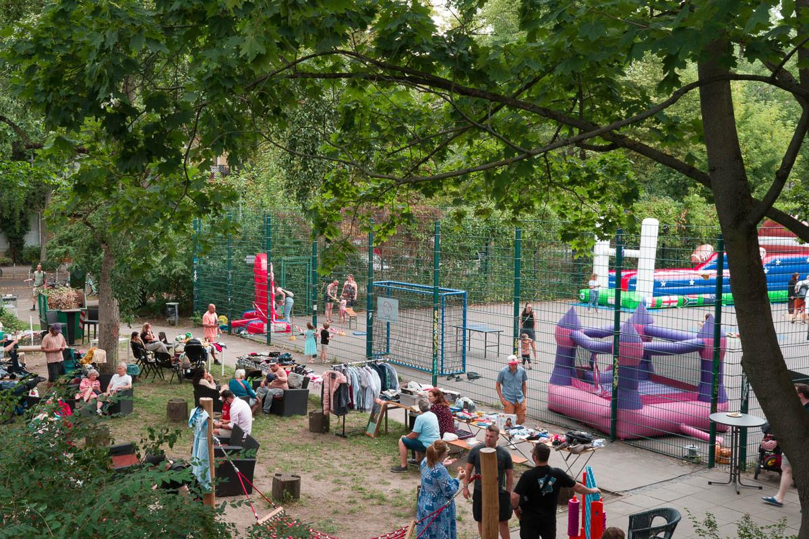
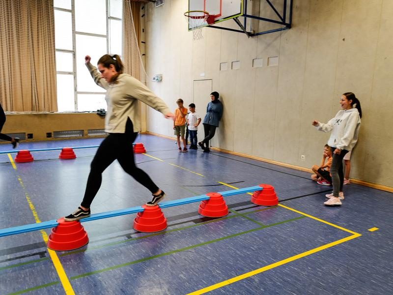
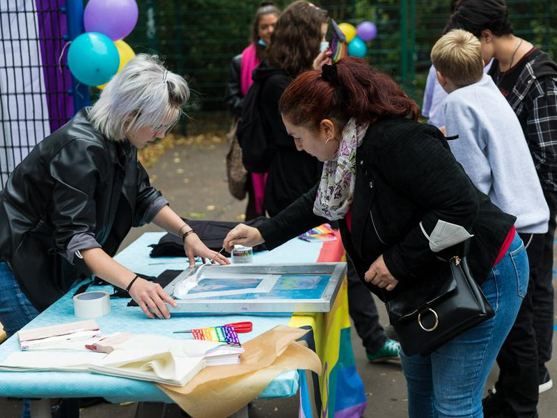
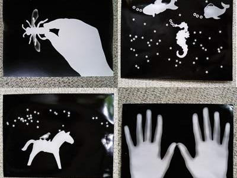
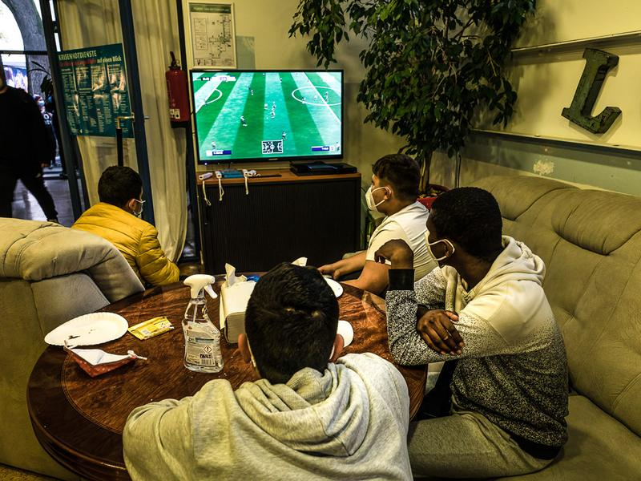
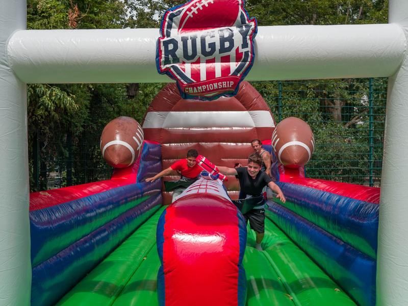

Bredowtreff
Die Jugendfreizeiteinrichtung in Moabit seit 1962.
Unser Angebot
Für Kinder von 8 bis 14 und Jugendliche von 15 bis 27 Jahren.
-

Sport & Bewegung -

Kreativ & Kochen -

Foto & Dunkelkammer -

Spiele & E-Sport -

Feste & Ferien -
 Events & Erlebnisse
Events & Erlebnisse
Mitten in Moabit
Du findest uns im Wolfgang-Scheunemann-Haus. Der Eingang ist in der Bredowstraße 31–32, 10551 Berlin.
Kontakt